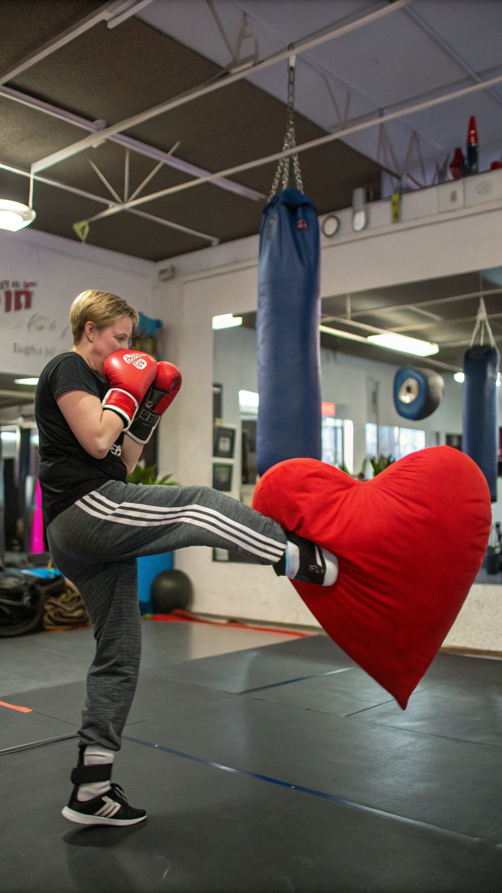
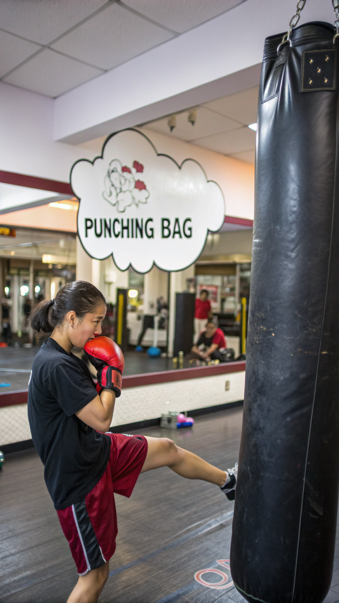
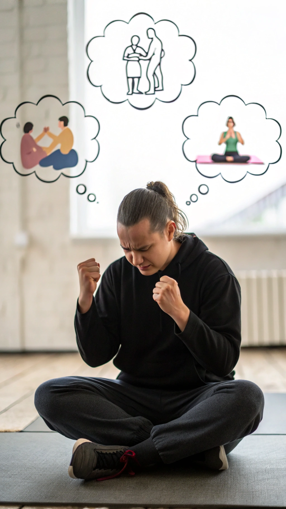
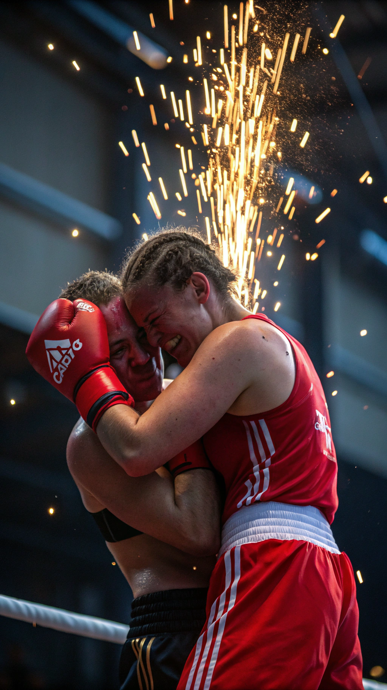
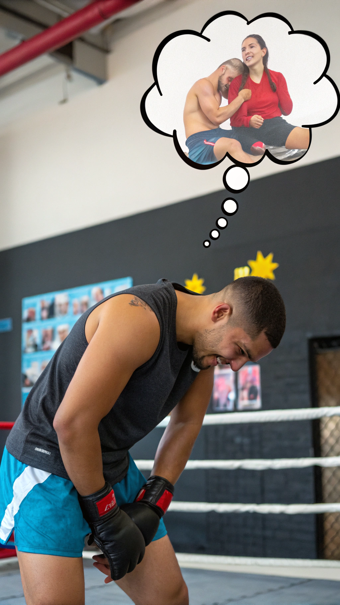
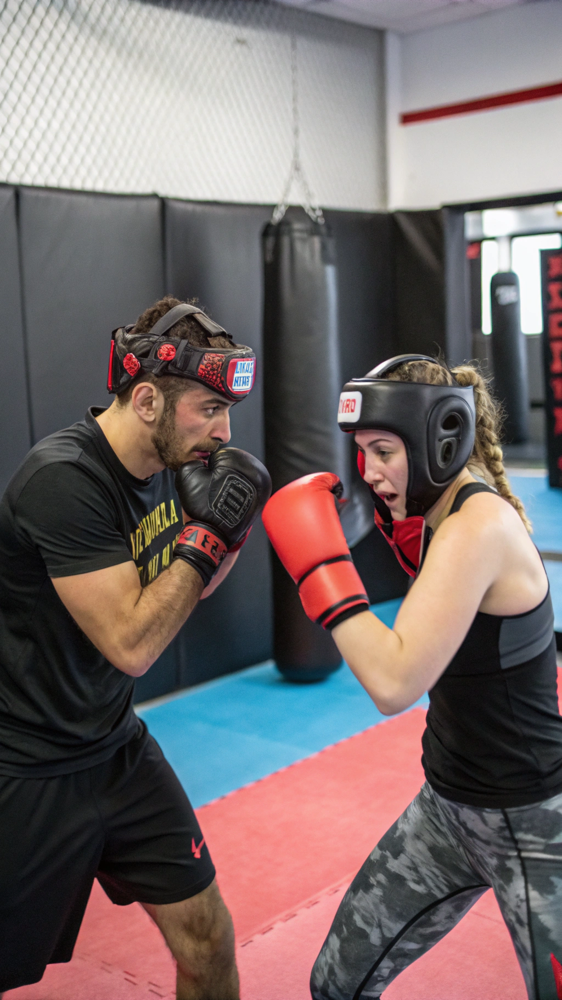
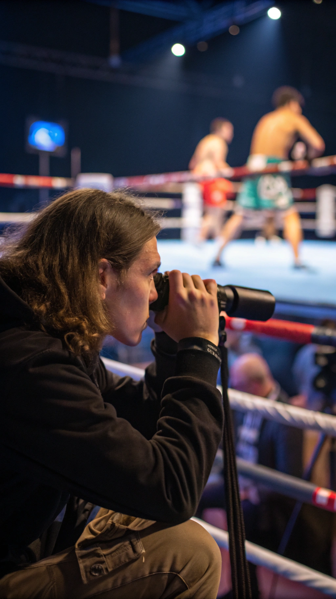

Erfahren Sie, wie das Trainieren von Tritten und Schlägen Ihr Liebesleben beeinflussen kann!
Testosteron und Adrenalin: Die unsichtbaren Kämpfer in Ihrem Körper. Wie sie Ihre sexuelle Leistungsfähigkeit beeinflussen.

Wie regelmäßiges Kickboxen Ihre Durchblutung verbessern und Erektionsstörungen bekämpfen kann. Oder auch nicht...

Wie Selbstverteidigung Ihre Selbstwahrnehmung und sexuellen Ängste beeinflussen kann. Keine Angst vor dem nächsten Date!
Erfahren Sie von Kickboxern, deren Leben durch das Training eine unerwartete Wendung nahm. Spoiler: Es wird heiß!

Wie das intensive Training Ihre Libido ankurbeln oder abtöten kann. Es kommt auf die Technik an!

Wie Verletzungen im Ring Ihr Liebesleben auf den Kopf stellen können. Ein Schlag in die Eier kann mehr als nur weh tun!

Wie gemeinsames Kickboxen Ihre Beziehung stärken oder zerstören kann. Wer gewinnt, wenn die Faust fliegt?
Ein Überblick über die neuesten Studien zum Thema Kickboxen und sexuelle Gesundheit. Spoiler: Es ist kompliziert!

Zusammenfassung der wichtigsten Erkenntnisse und ein Ausblick auf zukünftige Forschung. Bleiben Sie dran, es wird spannend!